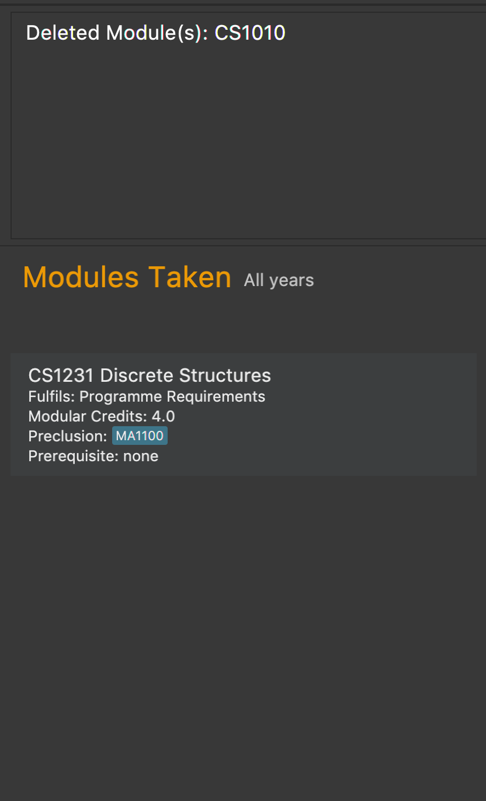

Overview
This is a project portfolio about a team project that I have completed recently. The product born from this effort is called ModulePlanner.
About Project
ModulePlanner is an desktop application that helps Computer Science students in the National University of Singapore to plan their modules throughout their academic journey. It is built on top of an existing application.
It has a graphical user interface but the user interacts with it mainly through the command line interface (keyboard only).
The main features are the adding and deleting of modules, as well as the suggesting of new modules that the user can take based on their academic requirements.
Over the next few sections, I will describe my role and contributions to the project.
Role
-
Developer
-
UI in-charge
Summary of Contributions
Major Enhancement
-
Enhance Delete Command
-
The
deletecommand allows the deletion of modules from ModulePlanner. -
When modules are deleted, modules that have the former as one of their prerequisites are deleted too. This continues until no more modules are deleted.
-
This enhanced command is better than a simple delete which only deletes modules specified without any awareness of other modules that depend on them.
-
The automatic removal of invalid modules in ModulePlanner assures the user that whatever they see in ModulePlanner is up-to-date.
-
The user too does not have to manually look through modules that have their prerequisites violated, hence saving them time and effort.
-
Minor Enhancements
-
Setup Command
-
Co-authored the
setupcommand. -
setupasks the user to input to their major and optionally their focus areas. This gives ModulePlanner the necessary information to tailor the modules suggested to the user.
-
-
Find and Goto Commands
-
The
findcommand allows retrieval of module information. -
The
gotocommand allows switching between the different year-semester user interface (ui) views.
-
-
UI and Associated Behaviours
-
Added a column to display suggested modules and another to display results of the
findandstatuscommands. -
Updated the application icon to fit ModulePlanner.
-
Other Contributions
-
README
-
Updated to reflect what ModulePlanner is and how it can solve the user’s problems in planning their modules.
-
-
User Guide
-
Updated with information on how to use the
delete,findandgotocommands. -
Ordered some of the commands in the User Guide alphabetically to make it easier for the user to find the command they are looking for. The other commands are ordered based on when they are meant to be used (placed by my teammate Rong Jie).
-
-
Developer Guide
-
Updated with descriptions on how the
deletecommand is implemented, why it was so, and any alternative implementations considered. -
Updated the PowerPoints of the diagrams (except for the ones that fall under my teammates' features) in the Developer Guide to reflect the structure and behaviour of ModulePlanner.
-
-
Pull Requests Reviews
-
Github Issue Tracker
-
Added new issues that arose from offline team discussions and bug discoveries.
-
Assigned teammates to the corresponding bug reports from other teams.
-
-
Github Projects Board
-
Managed frequently during the earlier parts of the project when lots of ideas and changes were happening.
-
Added in important notes like the team coding standard, the team workflow and to-dos.
-
-
Github Releases
-
Managed the releases of
v1.2andv1.3
-
-
Report Bugs and Offered Suggestions for Others
-
Found and reported bugs for another team working on the same project.
-
Suggestions were also offered to improve their application.
-
Contributions to Code
The link below brings you to my code contribution dashboard. |
Contributions to the User Guide
Given below are some sections I contributed to the User Guide. |
-
The page is divided into several sections.
 Figure 1. The labelled page
Figure 1. The labelled page-
Input Box: input commands here.
-
Result Display: displays command results and other associated messages.
-
Time Period: displays the year and semester you are currently viewing.
-
Taken Modules Panel: lists modules that you put into the specified time period.
-
Suggested Modules Panel: lists modules that suggested to you for that time period.
-
Multipurpose Panel: displays results for the
FindandStatuscommands.
-
Deleting modules : delete
Deletes the specified modules from list of current or future modules for the specified year and semester.
Format: delete c/MODULE_CODE…
Examples:
-
delete c/CS1010 -
delete c/CS1231 c/MA1521
Consider a module planner stocked with the modules CS1010 and CS1231 in year 1 semester 1, and the modules CS2030
and CS2040 in year 1 semester 2. If delete c/CS1010 is executed, CS1010 is removed, as well as the modules CS2030
and CS2040 in year 1 semester 2 since they have CS1010 as a prerequisite.
You can see the change in the Taken Modules Panel in the before and after images.
Before |
After |
|
 |

Going to a different year and semester : goto
Changes the view to the specified year and semester.
Format: goto y/YEAR s/SEMESTER
Example:
-
goto y/1 s/1
The change can be seen in Taken Modules Panel in the before and after images.
Before |
After |
|
|


Contributions to the Developer Guide
Given below are some sections I contributed to the Developer Guide. |
Delete feature
Current Implementation
About
The current delete mechanism is facilitated by ModulePlanner.
ModulePlanner stores a list of all the semesters the user has taken and will take.
In turn, Semester stores a list of the modules the user has taken, is currently taking or will be taking.
Process
When a module is deleted, ModulePlanner will go through every module added after the semester which the
module is deleted from and checks if those modules now have prerequisites that are not fulfilled. If there
are now prerequisites not fulfilled for the modules checked, they too are deleted and the process repeats for them.
For better addressing, this process will be defined as Iterative Deletion.
Input
The arguments given to the mechanism are modules, which can be a mix of valid and invalid modules. A valid module is defined as one that has the correct module code format and has been taken, is currently being taken or will be taken by the user (is stored in the module planner). An invalid module is defined as the opposite.
Result
Out of all these arguments, only the valid modules will be deleted from the module planner. The invalid modules
are collected and made known to the user through the Result Display. The modules that are not found in the module planner
are shown to the user in the Result Display. Modules with invalid module code formats are already filtered out by the
DeleteCommandParser and hence do not appear as part of the message shown in the Result Display.
ModulePlanner uses the following operation to implement the delete mechanism:
-
ModulePlanner#deleteModules(List<Module> modules)— Deletes the modules from whatever semester it is in.
The above operation is exposed in the Model interface as Model#deleteModules(List<Module> modules)
The following sequence diagram shows how the delete operation works:
Below are some usage scenarios.
For convenience, let’s define some valid modules: CS1010, CS2030 and CS2040
and an invalid module CS0000. CS1010 is a prerequisite for CS2030 and CS2040.
Let’s also initialise a module planner with those valid modules:
YEAR 1 SEMESTER 1: [CS1010]
YEAR 1 SEMESTER 2: [CS2030, CS2040]
…
A Valid Module
The user executes delete CS1010 command to delete the valid module CS1010.
The delete command calls Model#deleteModules(…), which removes the module from the semester where it is found.
Iterative Deletion is then applied. Since CS2030 and CS2040 have CS1010 as a prerequisite, if CS1010 is
deleted, CS2030 and CS2040 will too be deleted.
The module planner now has this state:
[EMPTY]
| This applies to when more than one valid module is supplied. |
An Invalid Module
The user executes delete CS0000 command. However, since that module is not found in the module planner,
the command fails and Model#deleteModules(…) will not be called. The user will be informed of the invalid module.
| This applies to where more than one invalid module is supplied. |
Mix of Valid and Invalid Modules
The user executes delete CS1010 CS0000. However, only the module CS1010 is valid.
In this case, Model#deleteModules(…) is still called, but only the valid module CS1010 will be deleted and
Iterative Deletion applied. The user will be informed of the invalid module.
| This applies to where more than one valid and invalid modules are supplied. |
No Modules
The user executes delete. As the command has no supplied arguments, the command will fail
and the user will be informed to input arguments.
Design Considerations
Aspect: Argument leniency
-
Alternative 1: Entirely reject modules even if one is invalid.
-
Pros: Simple logic and requires minimal code.
-
Cons: Not user friendly. The user now has to expend additional effort to edit the modules inputted.
-
-
Alternative 2 (current choice): Accept the valid modules even if one is invalid.
-
Pros: User friendly. The user gets to delete the valid modules and is notified of which modules are invalid and why.
-
Cons: More complex. Requires filtering logic.
-
Aspect: Iterative Deletion
-
Alternative 1 (current choice): Iterate through the modules in each semester for all years. For each semester, the modules that do not have their prerequisite fulfilled are marked as invalid and are deleted.
-
Pros: Simple logic and requires minimal code.
-
Cons: Although the number of modules in the module planner is weakly limited by the education institute (students are only required to take about 40 modules to earn a degree), the algorithm is still relatively slow.
-
-
Alternative 2: Construct a direct acyclic graph for all the modules in the module planner
-
Pros: Fast and efficient. There is no need to iterative through several semesters to mark modules as invalid and then deleting them.
-
Cons: More complex. Due to time constraints during the project, this approach was not taken.
-
Find feature
Current Implementation
About
The find mechanism is facilitated by the posting and handling of events. The FindCommand#execute(…) is the event poster
and the MainWindow#handleFindEvent(…) is the event handler. find allows the user to retrieve more information about
a specified module.
Input
The argument given to the mechanism is a module, which has to be offered by the education institute. If a module is not offered, the command fails.
Result
The information about the module is retrieved and displayed in the Multipurpose Panel.
The following sequence diagram shows how the find operation works:
Below are some usage scenarios.
Module is Offered
The user executes find c/CS1010. The MultiPurposePanel displays the retrieved module information.
Module is Not Offered
The user executes find c/CS0000. The MultiPurposePanel does not display anything.
Goto feature
Current Implementation
About
The goto mechanism is facilitated by the posting and handling of events. The GoToCommand#execute(…) is the event poster
and the MainWindow#handleGoToEvent(…) is the event handler. goto allows the user to switch between time periods in the ui.
A time period is defined as a year-semester pair [Year, Semester].
Input
The argument given to the mechanism is a year-semester pair. The year has to be between 1 and 4, and the semester has to be between 1 and 2.
Result
The ui switches time periods to the specified. The modules taken in the time period is displayed too.
The following sequence diagram shows how the goto operation works:
Below are some usage scenarios.
Valid Year and Semester
The user executes goto y/1 s/1. Since both the year and semester are valid, the ui changes accordingly.
Invalid Year and Valid Semester
The user executes goto y/5 s/1. Since only the semester is valid, command fails and the ui does not change.
| This applies to when the year is valid but the semester is invalid. |
| It is possible that some users take a 5th year and beyond in their education institute. However, as of now, Module Planner does not support years beyond the 4th. |